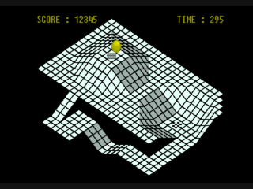
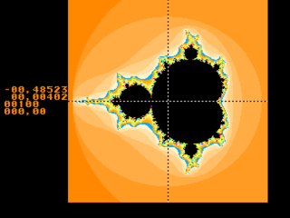
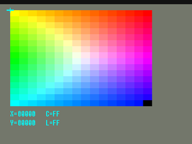

YES. MOSTLY. HERE IS THE MATH.
A sweep over a private collection of 139 cartridge dumps and homebrew programs, each run for 15 seconds of emulated time, with vjag_test compat:
| RESULT | IMAGES | THE BAR GRAPH OF DESTINY |
|---|---|---|
| Animated picture | 118 | ██████████████████████████████████████████████████████████ |
| Static picture | 4 | ██ |
| Blank screen | 11 | █████ |
| 68000 ended up outside any program | 5 | ██ |
| Refused by the loader | 1 | ▌ |
Most of the blank ones are tools that draw nothing by design, or dumps that are damaged. The crashes are real bugs.
Pixels moved. The game can still be wrong. From looking at the pictures: 3D titles render their worlds, 2D titles scroll and animate, menus respond to the pad, and music plays.
Known problems include one racing game that crashes its sound driver after about 13 seconds, a few demos that fall over on scaled sprites, and whatever nobody has played far enough to find.
| THING | STATUS | WHAT THAT MEANS |
|---|---|---|
| Boot ROM | NOPE | Everything starts by direct boot: the cartridge runs with the video timing the boot ROM would have left behind. Loading a real boot ROM is not wired up. |
| Blitter timing | INSTANT | A blit finishes the instant it is started. Results are exact pixel for pixel in the tested modes, but software can never catch the blitter busy. |
| Cycle accuracy | HALF | The 68000 counts cycles correctly; the RISC processors use rough per-instruction costs. The timing profile is called functional_v1. |
| Save states | NOPE | Cartridge EEPROM saves work and persist. Save states do not exist. |
| Jaguar CD | NOPE | Not emulated. |
| Wavetable ROM | FAKED | The eight waveforms in JERRY are generated, not dumped, so software that plays them sounds close but not identical. |
| Platforms | ONE | Tried on macOS arm64. vjag_test links without SDL, so it should build wherever V does. |
These four are public-domain homebrew running in vjag. The blitter, the GPU, the CRY colour space and the object processor, one picture each:
 wireframe landscape through the blitter JagMarble (1999) |
 Mandelbrot set on the emulated GPU Mandelbrot Demo |
 the Jaguar's CRY colour space Chroma-Luma Color Pick, Matthias Domin (1996) |
a 16-bit CRY photo via the object processor Hubble Nebula, Robert Jurziga |
Run it through vjag_test trace first (see the headless tools), then open an issue. Please do not attach ROMs.